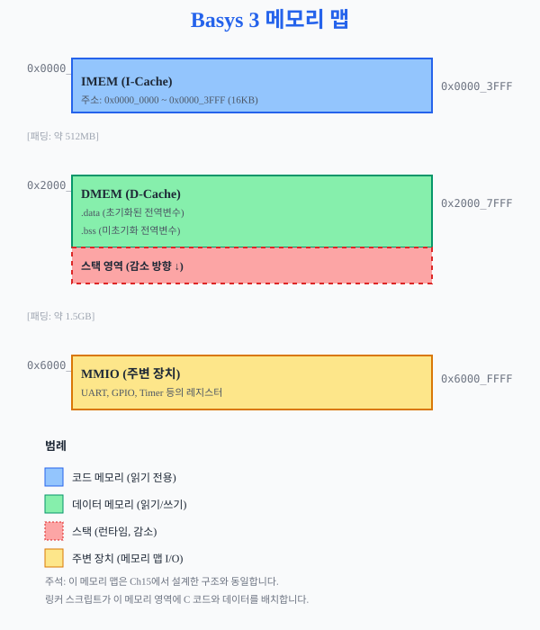
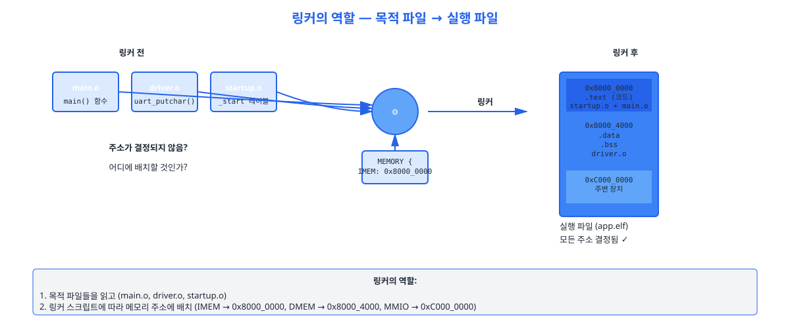
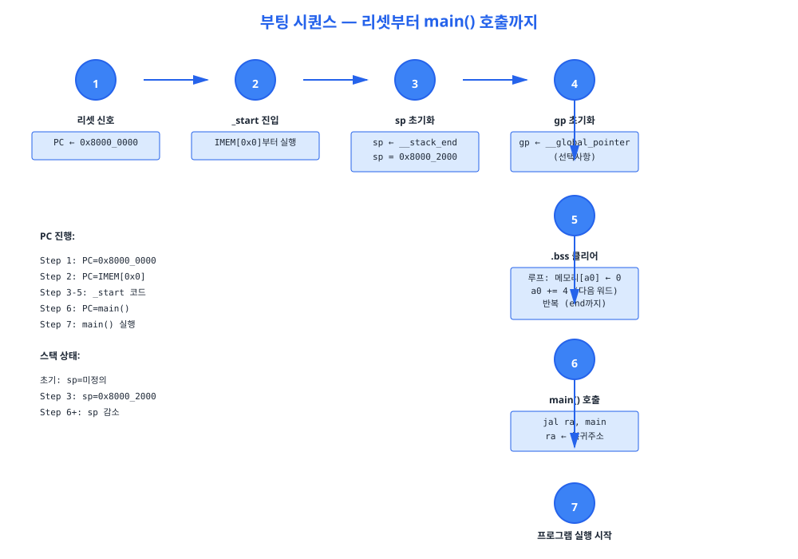
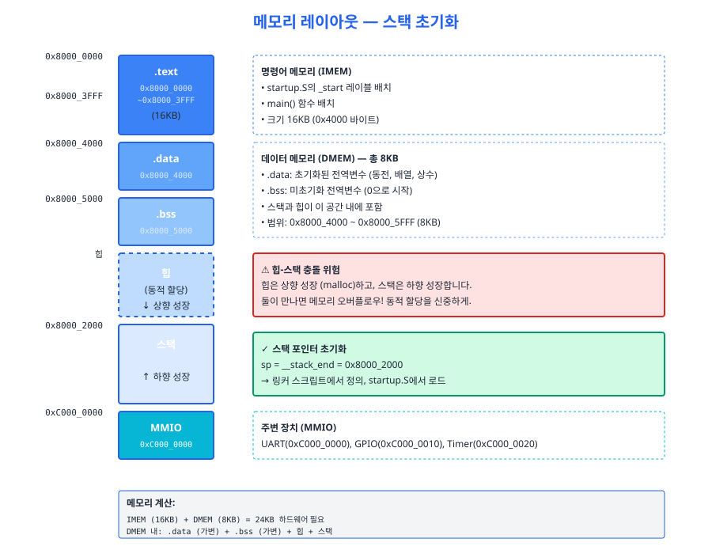
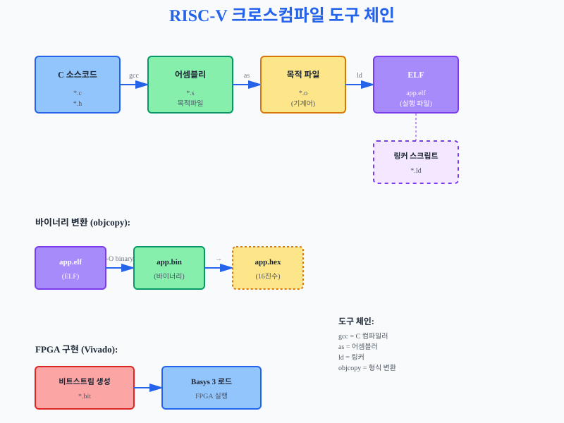
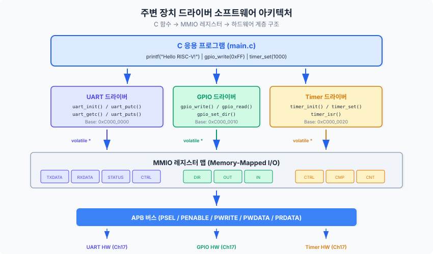
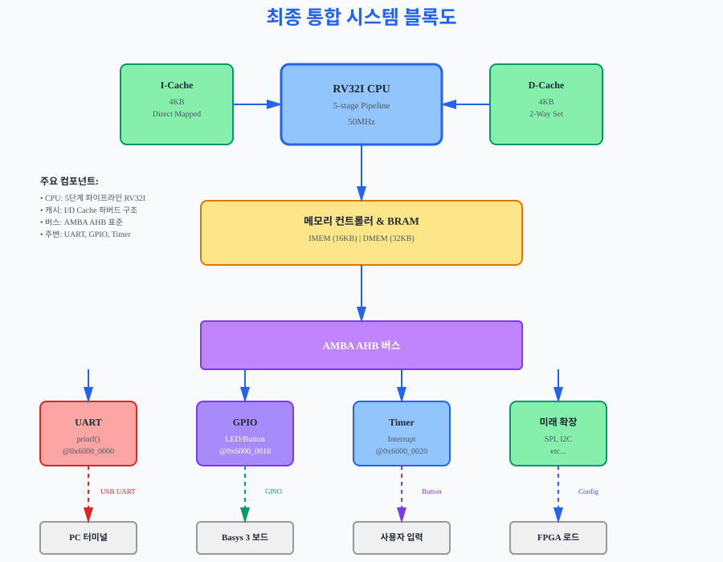

당신이 설계한 RISC-V 프로세서가 이제 진정한 의미의 "컴퓨터"가 되는 순간입니다. 이 챕터에서는 링커 스크립트, C 프로그램 실행 흐름, 그리고 주변 장치 드라이버를 통해 하드웨어와 소프트웨어를 연결하고, 마지막으로 Basys 3 보드에서 C 코드를 직접 실행합니다.
당신은 지금까지 하드웨어를 설계했습니다. Verilog 코드를 합성해서 FPGA 비트스트림을 만들었습니다. 하지만 여기서 새로운 질문이 생깁니다.
"하드웨어는 완성했어. 그런데 소프트웨어는? C 프로그램은 어떻게 메모리에 배치되고, CPU는 어떻게 첫 명령어를 찾아 실행할까?"
이 섹션은 그 대답입니다. 바로 **링커 스크립트**가 그 역할을 합니다.
먼저 우리 Basys 3 프로세서의 메모리 구조를 정리합시다. Ch15에서 설계했던 메모리 구조를 떠올려보면:
C 프로그램도 이 메모리에 배치되어야 합니다. 예를 들어:
.text 섹션 (코드) → IMEM에 배치.data 섹션 (초기화된 전역변수) → DMEM에 배치.bss 섹션 (미초기화 전역변수) → DMEM에 배치**링커 스크립트**는 이 배치를 제어하는 "처방전"입니다. C 코드를 컴파일하는 것만으로는 부족합니다. 링커가 "이 코드는 0x0000_0000에 넣고, 그 데이터는 0x1000_0000에 넣어"라는 지시가 필요합니다.

링커 스크립트는 다음 3가지만 정의하면 됩니다:

여기 우리의 **최소 링커 스크립트 템플릿**입니다:
/* ch22_linker.ld — RV32I 링커 스크립트 템플릿 */
/* MEMORY: Basys 3의 메모리 구조 정의 */
MEMORY {
IMEM (rx) : ORIGIN = 0x80000000, LENGTH = 16K /* 명령어 메모리 */
DMEM (rwx) : ORIGIN = 0x80000000, LENGTH = 8K /* 데이터 메모리 */
}
/* SECTIONS: C 코드의 어느 부분이 어디로 갈 것인가? */
SECTIONS {
/* 코드 섹션 → IMEM */
.text : {
*(.text*) /* 모든 .text 섹션 */
*(.rodata*) /* 읽기전용 데이터 (상수) */
} > IMEM
/* 초기화된 데이터 → DMEM */
.data : {
*(.data*)
} > DMEM
/* 미초기화 데이터 → DMEM (메모리만 예약, 값은 0으로 초기화) */
.bss : {
*(.bss*)
*(COMMON)
} > DMEM
/* 스택 포인터 초기값 설정 (DMEM 끝) */
__stack_end = ORIGIN(DMEM) + LENGTH(DMEM);
}
문제: 다음 링커 스크립트를 분석하고, 메모리 배치도(주소 범위)를 그리세요.
MEMORY {
IMEM : ORIGIN = 0x80000000, LENGTH = 0x4000
DMEM : ORIGIN = 0x80000000, LENGTH = 0x2000
}
풀이:
컴파일러(gcc)가 C 코드를 어셈블리로 바꾸고, 링커(ld)가 메모리에 배치합니다. 하지만 그 후 어떤 일이 일어날까요? CPU가 첫 명령어를 어떻게 찾고 실행할까요?
전원이 켜지면 CPU의 프로그램 카운터(PC)는 0x0000_0000으로 리셋됩니다. 이곳은 IMEM의 시작 주소입니다. CPU가 실행할 첫 명령어가 여기 있어야 합니다.
문제: C의 `main()` 함수만 있으면, CPU는 main이 어디 있는지 모릅니다. 따라서 **부트스트랩 코드(bootstrap code)**가 필요합니다. 이것을 보통 `_start` 심볼로 표현합니다.

부트스트랩의 역할은:
여기 우리의 **스타트업 어셈블리 템플릿**입니다:
/* ch22_startup.S — RV32I 스타트업 코드 */
.section .text.init /* 특수 섹션: 맨 앞에 배치됨 */
.globl _start /* 링커가 여기를 진입점으로 사용 */
_start:
/* 1. 스택 포인터 초기화 */
/* __stack_end는 링커 스크립트에서 정의함 */
la sp, __stack_end /* sp ← 링커가 정의한 스택 최상단 주소 */
/* 2. 전역 포인터 초기화 (선택사항) */
/* la gp, __global_pointer$ */
/* 3. .bss 섹션 0으로 초기화 (링커 심볼 사용) */
la a0, __bss_start /* a0 ← .bss 시작 */
la a1, __bss_end /* a1 ← .bss 끝 */
ble a0, a1, _clear_bss_done
_clear_bss:
sw zero, 0(a0) /* 메모리[a0] ← 0 */
addi a0, a0, 4 /* a0 += 4 (다음 4바이트) */
blt a0, a1, _clear_bss
_clear_bss_done:
/* 4. main() 함수 호출 */
/* RISC-V Calling Convention: 반환값은 a0에 저장됨 */
jal ra, main /* ra에 복귀주소 저장하고 main() 점프 */
/* 5. main() 복귀 후: 무한 루프 */
/* (임베디드 시스템은 계속 실행되어야 함) */
_loop:
j _loop /* 무한 루프 */
.end

이제 간단한 **main() 함수**를 만들어봅시다:
/* ch22_main_example.c — Hello World 시작 프로그램 */
/* 전역 변수 (C의 모든 글로벌 변수는 .data 또는 .bss에 배치됨) */
int counter = 42; /* .data (초기화됨) */
char buffer[256]; /* .bss (미초기화, 메모리만 예약) */
int main(void) {
/* 로컬 변수 (스택에 배치됨) */
int x = 10;
int y = 20;
int result = x + y;
/* 무한 루프 (임베디드 시스템의 표준) */
while (1) {
/* 여기서 주변 장치와 상호작용 */
/* 다음 섹션에서 배우게 됩니다 */
}
return 0; /* 도달 불가능 (while(1)이 있으므로) */
}
함수 호출 시 인자와 복귀값이 어느 레지스터에 저장되는지 정의하는 것을 **Calling Convention**이라고 합니다. RISC-V RV32I는 다음을 따릅니다:
| 용도 | 레지스터 | 이름 | 설명 |
|---|---|---|---|
| 인자 1~8 | x10~x17 | a0~a7 | 함수의 처음 8개 인자를 이 레지스터로 전달 |
| 복귀값 | x10, x11 | a0, a1 | 함수의 반환값 (64비트는 a0:a1에 저장) |
| 복귀 주소 | x1 | ra | JAL 명령어가 자동으로 저장 |
| 스택 포인터 | x2 | sp | 스택의 현재 위치 (감소 방향) |
우리가 사용하는 컴파일러는 **크로스 컴파일러(cross compiler)**입니다. 이는 "현재 OS에서 다른 대상 아키텍처의 바이너리를 생성"한다는 뜻입니다.
# 컴파일 단계별 명령어
# 1. C 코드 전처리 (매크로 전개)
riscv32-unknown-elf-cpp ch22_main.c -o main.i
# 2. 컴파일 (어셈블리 생성)
riscv32-unknown-elf-gcc -c main.c -o main.o
# 3. 링킹 (링커 스크립트 적용)
riscv32-unknown-elf-ld -T ch22_linker.ld main.o -o app.elf
# 4. 바이너리 변환 (ELF → BIN, Vivado 로드용)
riscv32-unknown-elf-objcopy -O binary app.elf app.bin
# 5. 16진수 변환 (선택사항, IMEM .coe 파일 생성)
riscv32-unknown-elf-objcopy -O verilog app.elf app.hex

이제 C 프로그램이 메모리에 배치되고 실행됩니다. 하지만 아무도 프로그램의 결과를 볼 수 없습니다. UART 없이는 "Hello World"를 출력할 수 없고, GPIO 없이는 LED를 켤 수 없습니다.
이 섹션에서는 **주변 장치 드라이버**를 작성합니다. 드라이버는 "하드웨어 레지스터를 C 함수로 감싸는 것"입니다. 단순하지만 강력합니다.
드라이버를 단순하게 생각하면:

우리의 3단계 드라이버 설계:
UART는 **Universal Asynchronous Receiver-Transmitter** — "한 글자씩 직렬로 보내는 통신 장치"입니다. Ch17에서 하드웨어 설계를 배웠습니다. 이제 소프트웨어로 접근합니다.
UART 메모리 맵 (Ch17 설계 기준):
| 오프셋 | 이름 | 비트 | 설명 |
|---|---|---|---|
| 0x00 | TX_DATA | [7:0] | 송신 데이터 레지스터 (쓰기) |
| 0x04 | STATUS | [0] = TX_READY | 1 = 송신 가능, 0 = 송신 중 |
| 0x04 | STATUS | [1] = RX_VALID | 1 = 수신 데이터 있음, 0 = 없음 |
| 0x08 | RX_DATA | [7:0] | 수신 데이터 레지스터 (읽기) |
UART 드라이버 구현:
/* ch22_uart_driver.c — UART printf 연결 */
/* 레지스터 주소 정의 (메모리 맵) */
#define UART_BASE 0xC0000000
#define UART_TX_DATA ((volatile uint32_t *)(UART_BASE + 0x00))
#define UART_RX_DATA ((volatile uint32_t *)(UART_BASE + 0x08))
#define UART_STATUS ((volatile uint32_t *)(UART_BASE + 0x04))
/* 하위 레벨: 한 글자 송신 */
void uart_putchar(char c) {
/* TX_READY 폴링 (STATUS 비트[0]이 1일 때까지 대기) */
while ((*UART_STATUS & 0x1) == 0) {
/* 계속 대기... (송신 중) */
}
/* 송신 가능하면 데이터 레지스터에 쓰기 */
*UART_TX_DATA = (uint32_t)c;
}
/* 상위 레벨: 문자열 송신 */
void uart_puts(const char *str) {
while (*str != '\0') {
uart_putchar(*str);
str++;
}
}
/* printf 연결 (C 라이브러리가 호출하는 함수) */
/* gcc가 printf()를 _write()로 변환 → 우리가 UART로 구현 */
int _write(int fd, char *buf, int len) {
for (int i = 0; i < len; i++) {
uart_putchar(buf[i]);
}
return len;
}
**핵심: printf() 연결 원리**
사용자가 `printf("Hello\n")` 쓰면:
GPIO(General-Purpose Input/Output)는 "범용 입출력"입니다. Basys 3의 LED와 버튼을 제어합니다.
/* ch22_gpio_driver.c — GPIO LED/버튼 제어 */
#define GPIO_BASE 0xC0000010
#define GPIO_OUT ((volatile uint32_t *)(GPIO_BASE + 0x00)) /* LED 출력 */
#define GPIO_IN ((volatile uint32_t *)(GPIO_BASE + 0x04)) /* 버튼 입력 */
/* LED 제어 (LD15~LD0) */
void led_set(int led_index, int state) {
uint32_t mask = (1 << led_index);
if (state) {
*GPIO_OUT |= mask; /* 비트 OR: 해당 LED 켜기 */
} else {
*GPIO_OUT &= ~mask; /* 비트 AND: 해당 LED 끄기 */
}
}
void led_toggle(int led_index) {
uint32_t mask = (1 << led_index);
*GPIO_OUT ^= mask; /* XOR: 토글 */
}
/* 버튼 읽기 (BTN3~BTN0) */
int button_pressed(int button_index) {
uint32_t mask = (1 << button_index);
return (*GPIO_IN & mask) != 0;
}
타이머는 일정 시간마다 인터럽트를 발생시킵니다. 이것이 실시간 작업(LED 깜빡임, 주기적 샘플링 등)의 기초입니다.
/* ch22_timer_driver.c — 타이머 인터럽트 */
#define TIMER_BASE 0xC0000020
#define TIMER_COUNT ((volatile uint32_t *)(TIMER_BASE + 0x00)) /* 현재 카운트 */
#define TIMER_LIMIT ((volatile uint32_t *)(TIMER_BASE + 0x04)) /* 비교 레지스터 */
#define TIMER_CTRL ((volatile uint32_t *)(TIMER_BASE + 0x08)) /* 제어 레지스터 */
void timer_init(uint32_t period) {
/* 타이머 설정 */
*TIMER_LIMIT = period;
*TIMER_CTRL = 0x1; /* 타이머 활성화 */
/* CSR 설정 (Ch18~19에서 배움) */
uint32_t mie_mask = (1 << 7); /* MTIE (Machine Timer Interrupt) */
asm("csrs mie, %0" : : "r"(mie_mask));
uint32_t mstatus_mask = (1 << 3); /* MIE (Machine Interrupt Enable) */
asm("csrs mstatus, %0" : : "r"(mstatus_mask));
}
/* 타이머 인터럽트 핸들러 (Ch19 예외 처리 기반) */
void timer_interrupt_handler(void) __attribute__((interrupt)) {
/* 실행 기록: 예를 들어 LED 토글 */
static int led_idx = 0;
led_toggle(led_idx);
led_idx = (led_idx + 1) & 0xF;
/* 인터럽트 플래그 초기화 */
*TIMER_CTRL = 0x1; /* 다시 활성화 */
}
22.3.1에서는 UART를 인터럽트 기반으로 구현했습니다. 만약 우리가 폴링 기반으로 (ISR 없이 busy-wait) 구현했다면, 다음 상황에서 성능 차이를 분석하세요:
질문: 어느 방식이 더 효율적이고, 왜 그런지 설명하세요. (힌트: 인터럽트는 "제어를 주인공에게 넘겨준다"는 의미입니다)
이제 모든 준비가 완료되었습니다. 20주 동안 배운 모든 기술이 여기 모입니다.
/* ch22_demo_program.c — 최종 통합 프로그램 */
#include <stdint.h>
/* 드라이버 함수들 (22.3에서 정의) */
extern void uart_putchar(char c);
extern void uart_puts(const char *str);
extern void led_set(int idx, int state);
extern void led_toggle(int idx);
extern int button_pressed(int idx);
extern void timer_init(uint32_t period);
/* 글로벌 변수 */
volatile int timer_count = 0;
volatile int led_idx = 0;
/* 타이머 인터럽트 핸들러 */
void timer_interrupt_handler(void) __attribute__((interrupt)) {
timer_count++;
if (timer_count >= 10) {
timer_count = 0;
led_toggle(led_idx);
led_idx = (led_idx + 1) & 0xF;
}
}
int main(void) {
/* 초기화 */
uart_puts("\n");
uart_puts("===============================================\n");
uart_puts(" Hello RISC-V! Welcome to Chapter 22\n");
uart_puts(" Processor: RV32I 5-stage Pipeline\n");
uart_puts(" FPGA: Xilinx Basys 3 (XC7A35T)\n");
uart_puts("===============================================\n");
uart_puts("\n");
/* 타이머 인터럽트 활성화 */
timer_init(1000000); /* 1초 주기 (50MHz 클록 기준) */
uart_puts("Timer interrupt active. LED will blink automatically.\n");
/* 메인 루프 (무한) */
int counter = 0;
while (1) {
counter++;
if (counter % 50000000 == 0) {
uart_puts("Main loop running...\n");
}
}
return 0; /* 도달 불가능 */
}
Step 1: 크로스 컴파일
#!/bin/bash
# ch22_Makefile — 빌드 자동화
CROSS_COMPILE = riscv32-unknown-elf-
CC = $(CROSS_COMPILE)gcc
LD = $(CROSS_COMPILE)ld
OBJCOPY = $(CROSS_COMPILE)objcopy
# 컴파일 & 링킹
app.elf: ch22_main.c ch22_startup.s ch22_drivers.c
$(CC) -nostdlib -O2 -c ch22_startup.s -o startup.o
$(CC) -nostdlib -O2 -c ch22_main.c -o main.o
$(CC) -nostdlib -O2 -c ch22_drivers.c -o drivers.o
$(LD) -T ch22_linker.ld startup.o main.o drivers.o -o app.elf
# 바이너리 변환
app.bin: app.elf
$(OBJCOPY) -O binary app.elf app.bin
# Vivado에 로드할 HEX 파일
app.hex: app.elf
$(OBJCOPY) -O verilog app.elf app.hex
clean:
rm -f *.o *.elf *.bin *.hex
Step 2: Vivado에서 비트스트림 생성 & Basys 3에 로드
Step 3: 터미널에서 UART 모니터링
# Linux/Mac에서 minicom 또는 cu 사용
$ minicom -D /dev/ttyUSB0 -b 115200
# 또는 Windows: PuTTY 사용
# COM 포트 선택 → 115200 baud → Open
결과:
===============================================
Hello RISC-V! Welcome to Chapter 22
Processor: RV32I 5-stage Pipeline
FPGA: Xilinx Basys 3 (XC7A35T)
===============================================
Timer interrupt active. LED will blink automatically.
Main loop running...
Main loop running...
...
동시에 **Basys 3의 LED LD0~LD15가 1초 간격으로 순차적으로 점멸**합니다!

당신이 20주 동안 배운 모든 것이 이제 **하나의 작동하는 시스템**이 되었습니다.
이 모든 것을 혼자 했습니다. 당신은 이제 임베디드 시스템 아키텍트입니다.
Part 9 선택 과제 (확장 가능):
산업 현장으로의 연결: